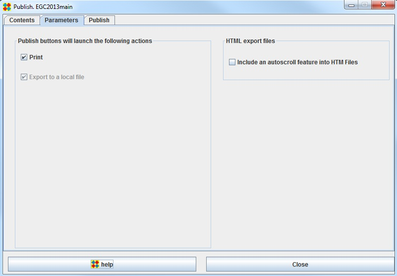

Parameters

Print
Check this checkBox if you want the published items to be printed
Export to a local file
This checkbox is always checked. Published items are sent to a html file in export/html directory
Export to a OpenGotha Site
Check this checkBox if you want the published item to be exported to the OpenGotha site.
Use the Test FTP button to test your Internet connection and the FTP upload process.
From a smartphone or a tablet, read this QR code with any QR Code reader
Export to a User Defined Site
This feature is not yet implemented in current OpenGotha release
Include an autoscroll feature into HTML files
With this option selected, HTML pages will automatically scroll the contents when displayed.
To see what it looks like, open : http://opengotha.info/scrollexample/EGC2013_GamesListR10.html in your browser.
This is useful for example if you use a projector to diplay pairings and your have more than 30 boards to display.
Think of using Ctrl+ and Ctrl- to adjust font size.